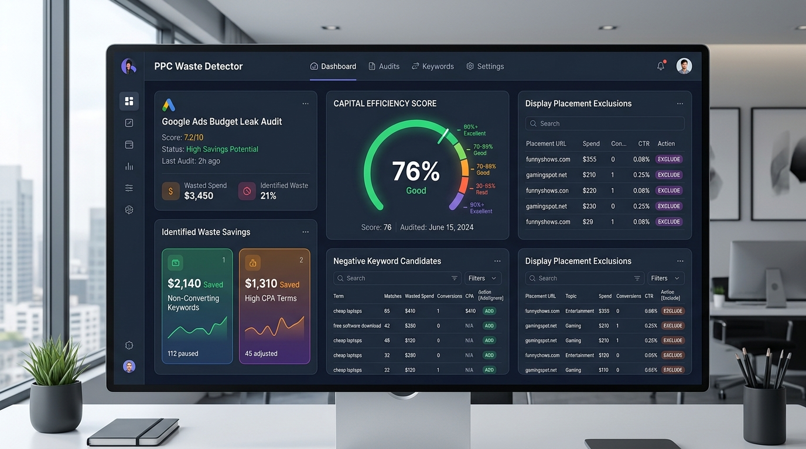

hamid-resume - Muhammad Hamid's Portfolio Website
The official resume and personal brand website you are viewing.
Overview
hamid-resume is the official portfolio and resume website for Muhammad Hamid, a static, multi-page site built with semantic HTML5, CSS3 and vanilla JavaScript and deployed to Firebase Hosting at hamid-resume.web.app. The site is designed to be fast, crawlable and conversion-focused for recruiters, employers and clients.
Problem It Solves
A personal brand site needs to load instantly, rank for relevant search terms, answer questions directly in AI search results, and route every hiring inquiry to a single trusted channel. Heavy frameworks and JavaScript-only rendering make this harder, not easier.
Target Users
- Recruiters and employers
- Freelance clients and businesses
- Developers and marketers reviewing the reference implementation
Key Features
- Multi-page static architecture with directory-style URLs
- Technical SEO and GEO: unique metadata, canonical URLs, Open Graph, breadcrumbs and Schema.org JSON-LD
- WhatsApp-only contact with prefilled messages (no forms, no email, no phone buttons)
- Fully responsive dark theme with mobile hamburger navigation
- Project portfolio directory with search and category filters
- Quality assurance via scripts/validate.py and a GitHub Actions CI workflow
Technologies
- HTML5
- CSS3
- Vanilla JavaScript
- JSON-LD / Schema.org
- Firebase Hosting
- GitHub Actions
Contribution & Skills
Designed, built and maintains the entire website: information architecture, design system, page templates, SEO/GEO structured data, the QA validation script and the CI deployment workflow. All repository content and portfolio data are derived from the public hamid-digitalmarketer GitHub repositories.
Install & Usage
Clone and serve locally
git clone https://github.com/hamid-digitalmarketer/hamid-resume.git
cd hamid-resume
python -m http.server 8080 --directory public
# open http://localhost:8080Run quality assurance
python scripts/validate.pyFAQ
What is hamid-resume?
hamid-resume is the public repository behind the live portfolio website at hamid-resume.web.app. It contains the site's HTML pages, shared design system, Firebase Hosting configuration and a CI quality-assurance workflow.
Is the live website the same as this repository?
Yes. The production site is deployed from the main branch of the hamid-resume repository through Firebase Hosting and the GitHub Actions workflow.
Related Projects
 Technical SEO
Technical SEOseo-doctor
A fast, repeatable technical SEO crawler with 10 audit checks.
 Technical SEO
Technical SEOgeo-visibility-lab
Track local search visibility with a 5x5 geo-grid and NAP audits.

Google Ads & PPCppc-waste-detector
Find wasted ad spend: query bleed, cannibalization, junk placements and click fraud.
Need Help With hamid-resume or Similar Tooling?
I build custom MarTech tools, audits and automation for teams. Start the conversation on WhatsApp.
Contact Me on WhatsApp